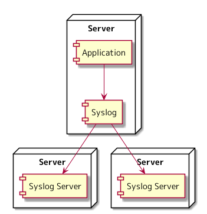
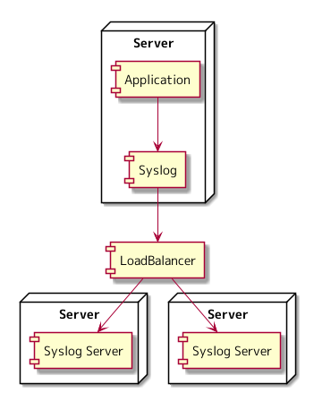

さくらインターネット Advent Calendar 2021 14日目の記事になります。
今日から、ログ管理について考えていることを何回かに分けて書いていきたいと思っています。
「さくらの専用サーバ PHY」では Grafana Loki にて、ログ管理・監視の基盤を構築しています。 Grafana Loki の前には、 Graylog を使いログを管理していました。
Grafana Loki がイケているから使っているのではなく、 syslog を使ったログ管理を運用した場合どのようなことが考えられるか、 syslog ではなく Graylog を使うと何がうれしくて、 Grafana Loki を使うと Graylog よりも何がうれしかったのかという流れで書いていく予定です。
ログ管理となると一番馴染があるのは、 syslog なのではないかと思っています。 今回は、 syslog を使ったログ管理を運用した場合、どのようなことが考えられるかについて書いてみます。
syslog でのログ管理
syslog のエージェントからログが転送され、 syslog サーバーは受信したログを自身のストレージにファイルで書き出すという構成を仮定した場合に、 下記の観点にてログ管理がどのようになるのか考察してみます。
- ログ出力
- 冗長化
- ストレージ拡張
- ログ参照
- ログのローテート
- スケールアウト
ログ転送・保存の構成としては、下記の2つのパターンがあるのではないかと思います。
転送先の Syslog Server を複数設定した構成
アプリケーションは、ログ出力に syslog を使い、 syslog エージェントは、2つの syslog server にログを転送し、 2つの syslog server には同じログが保存されているという構成になります。

ロードバランサを Syslog Server のエンドポイントに設定した構成
アプリケーションは、ログ出力に syslog を使い、 syslog エージェントは、ロードバランサのエンドポイントにログを転送し、 2台ある syslog server のどちらか一方に syslog エージェントから転送されたログが保存されているという構成になります。

ログ出力
アプリケーションに syslog でログを出力する処理を入れる必要があります。 アプリケーションのログを別ファイルとしてサーバーに出力したい場合は、 syslog エージェントに設定が必要になります。 アプリケーションのログ出力が、 syslog と密に結合しています。
冗長化
ロードバランサを挟むと1台の syslog server が落ちても syslog でのログ受信というサービスは継続できますが、 それぞれに異なるログが保存されているため、ログ参照の冗長化という観点では、 1台の syslog server が落ちると、そこにあるログを参照できなくなってしまいます。
syslog エージェントにて複数の syslog server にログを転送する方法でも、 どちらかの syslog server がダウンした場合には、記録されているログが非対称になります。 ログ参照の冗長化という観点では、1台の syslog server が落ちると、 非対称になってしまった箇所のログを参照できなくなってしまいます。
syslog エージェントにて複数の syslog server にログを転送する構成をとると、 サーバーが十数台くらいであれば、そんなに手間は無いですが、 サーバーが数十台となったときに、ログの転送先の変更という思い切った構成変更をとることが億劫になりそうです。
ストレージ拡張
サービスの規模が拡大していくのと比例してログの流量が増えていくと仮定した場合、 syslog server 構築時に用意していたストレージ容量ではログを保存できなくなり、 ストレージの拡張が発生しそうです。
クラウドサービスを利用している場合は、 サーバーを停止しストレージの容量を上げれば、 既存のログを残したままストレージを拡張できそうですが、 物理サーバーだった場合は、別ディスクに交換し、 既存のログをコピーするという作業が発生しそうです。
どちらの場合も、 syslog server を停止しなければならず、ダウンタイムが発生します。
ログ参照
syslog server に保存されているログをどのように参照するか考えてみます。 一番単純な方法としては、サーバーにログインして grep するという手段が思い浮かびます。 サーバーにログインして grep しないパターンだと、 ログを検索するためのアプリケーションを作るという手段が考えられます。
どちらの方法をとったとしても複数のストレージにログが保存されているので、 複数のストレージに保存されたログをマージする仕組みを実装する必要がありそうです。
ログのローテート
ファイルという単位でログは保存されるため、 まずログをどのようなディレクトリ、ファイル構成で保存するか設計しなければならないです。 設計した構成に従いログをローテートする仕組みを実装する必要があります。 ログのサイズを圧縮したい場合は、ローテートのついてに圧縮するような仕組みも用意する必要があります。
スケールアウト
スケールアウトによって syslog server へのログの書き込みは分散できそうですが、 ログを参照することを考えると、たくさん syslog server を並べればよいというものでもなさそうです。
運用したらどうなりそうか
syslog server を停止しにくく、ログの参照やローテートのための仕組みを作り込まなければならないログ管理となりそうだなということが考察した内容から見えてきました。
次回は、これらの考察に対して Graylog を使うと、何がうれしいのかについて考えてみます。